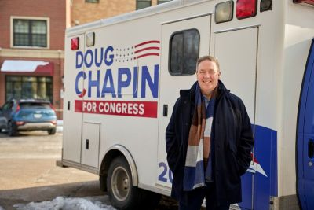
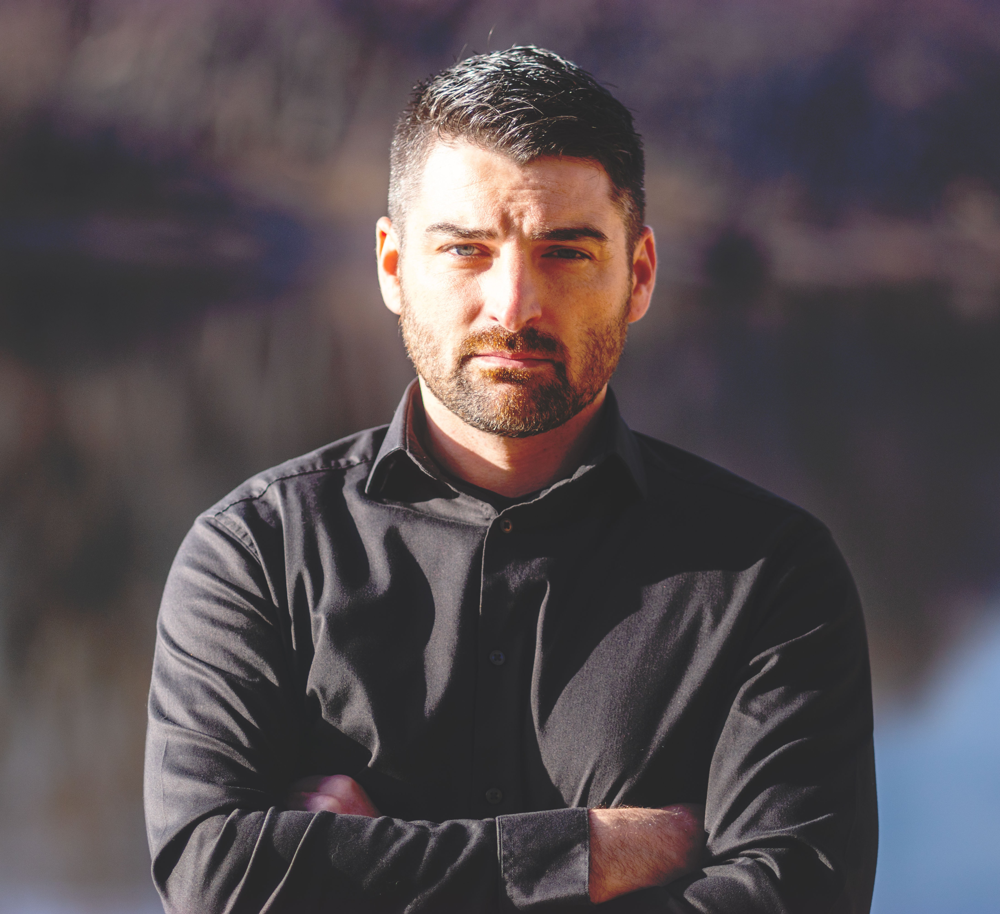

I decided to run for Congress in January 2025 when the President pardoned the January 6 rioters. My background is in democracy, elections, public policy and the law and I realized that it wasn't enough to improve the voting process incrementally from the outside when the barbarians were literally at the gates.
I'm running against Tom "go get 'em ICE" Emmer because he is the best (worst?) example of what is wrong with our current Congress. The Founders designed Congress to be the people's branch of government with responsibility to make decisions about revenue, spending, foreign policy and other vital national issues … and the current Congress is acting like a subservient rubber stamp to a President who acts and speaks like he wants to be a king. As Majority Whip, Emmer has the opportunity to help lead the House but instead has decided to use his position to act as the President's #1 cheerleader and blindly vocal defender. Defeating him would send a message to Members of both parties that they serve the Constitution, not any one individual.
Affordability — an economy that works for everyone. Every working family should have access to good jobs with adequate benefits and an opportunity to save for a home, higher education, retirement or whatever else they value. In short, every working family deserves an opportunity to thrive and not just survive.
Health care — a system that cares for everyone. The current for-profit insurance system values shareholders over patients and their healthcare providers. I support a single-payer system like Medicare for All to put patients back in charge of their care — including all aspects of care including mental health and reproductive care.
Rule of law — a government that serves everyone. Fighting to restore Congress' place as the people's branch and reassert its authority to represent every American (including immigrants) and not just the wealthy few.
I believe a Member of Congress — especially in the House — has three jobs:
Legislating — the push and pull of lawmaking.
Constituent service — helping district residents navigate the federal bureaucracy (Social Security, IRS, Medicare/Medicaid, service academies, etc.).
Being a booster for the district — a one-person Chamber of Commerce, if you will — who seeks out opportunities for public and private investment and looks to share our successes.
Emmer doesn't do any of these well, but he has completely failed at #3. He has clearly decided he'd rather be in DC and acts like time spent here at home is a necessary evil. I think the 6th has an amazing story and I'm eager to tell it in DC, across the nation and around the world.
It's common knowledge that Emmer has zero presence, physical or otherwise, in the district. I have plans for three major efforts to remedy that:
Regular (at least monthly) opportunities for me personally to face the voters — ideally in-person but also virtually if business keeps me in DC — town halls, Q&As, "lunch and learns", etc.
A commitment to true responsiveness as opposed to form letters and canned responses — check out my social media (especially Threads) for an example of what that might look like.
Increase the number of district offices — I plan to use more of my "clerk hire" allowance for district (as opposed to DC) staff, including at least one who travels to communities that don't have a physical space.
An emerging regional identity. Conventional wisdom is that the 6th (and Central Minnesota generally) is a rural area distinct from the more urban areas of the Twin Cities Metro and St. Cloud. But the reality is that the area is rapidly becoming a more cohesive and diverse community as development expands and new residents move in. Census data says that 1 in 5 residents have moved here in the last 5 years — a fact that I can confirm having spoken to so many CD6 voters in the last year. Increasingly, we are seeing young people coming back to their hometowns after school/training … as well as lots of older people who are returning to be closer to their children and grandchildren ("grandkid chasers" as one woman called herself). Yes, there are still areas of the district where farming and small-town life is dominant but it's clear that the 6th is more than just a collection of individual counties, cities and towns — it's a region with shared needs for jobs, healthcare, education, and public investment in infrastructure like the North Star rail line. This isn't the district that Tom Emmer first won in 2014 — it's a district that's ready for someone new who not only unifies the community but really values them — instead of pitting them one against another.
I'm running for Congress because Washington has lost touch with the people it's supposed to serve. I grew up here and served this country. I led Marines in Iraq making high pressure decisions, and I led engineers in industry solving real‑world problems. What I see in Washington today is not leadership, it's dysfunction. Instead of accountability, teamwork, and results, we get gridlock, finger‑pointing, and political theater.
Congress is intended to be the branch of government closest to the people, but today it keeps avoiding the hard decisions – diluting the voice of the people.
I'm running because I believe representation should come from everyday people who step up, serve with integrity, and then step aside after a limited number of terms. I'm running to restore trust, to bring back fiscal responsibility, and to put the focus on the people who built this district and deserve a government that finally works for them.
My top 3 priorities are Affordability, Accountability, and Mending Division.
1. Affordability is number one on voters' minds. People are working harder than ever and still falling behind. Three major drivers are hitting families the hardest:
Tariffs that raise prices — Tariffs have been unpredictable and overly broad. Businesses don't know what costs will look like next month, so they raise prices now to protect themselves. Families end up paying the bill. Tariffs should be used with precision and only when they strengthen American industries rather than punish consumers.
Taxes that squeeze working families — Minnesota families are paying too much while Washington keeps spending without discipline. If we truly want to lower taxes, we must balance the budget, and that means confronting the reality that both parties protect their own sacred spending items. I'll push for a balanced budget, lower taxes for working families, and an end to blank‑check spending.
Healthcare costs that are unpredictable and unfair — Healthcare is one of the biggest affordability crises in the district. Too many Minnesotans go in for a procedure believing it's covered, only to receive a massive bill because one provider was out of network. I will fight for real price transparency, upfront cost information, and reforms that put patients before lobbyists.
2. Accountability & Reform — Congress has become ineffective because they have been there too long and are only chasing re-election. I support term limits, banning single‑stock trading, and reducing the influence of super PACs. Representation should come from everyday people who serve, sacrifice, and then step aside.
3. Mending Division — Our democracy weakens when the loudest, most extreme voices set the agenda. Career politicians have learned to pit people against each other while they reward insiders. We can restore respect by rewarding courage over spectacle, encouraging honest debate, and rebuilding institutions that focus on solutions instead of outrage.
Our representative is not showing up.
For years, MN‑06 has had a representative who refuses to hold public town halls. Voters know he is the Majority Whip in Congress that spends every moment whipping votes for policies that are hurting them. Representation isn't about holding a seat — it's about listening, answering hard questions, and being accountable.
The people of MN‑06 deserve a representative who faces them. I am not a politician and have no desire to become a career politician; therefore, I can focus on engaging with constituents instead of fundraising for a re-election.
If elected, I will:
- Hold regular, open town halls across the district
- Provide transparent communication about votes and decisions
- Build a constituent‑first office culture focused on service, not gatekeeping
One thing not talked about enough is exploitation in senior care and assisted living organizations. Families are paying more while receiving less, and too many facilities hide behind misleading labels and corporate structures. I've thought through this myself when a family member was recently battling cancer.
Seniors deserve dignity, safety, and transparency — not corporate shell games.
I will push for oversight, transparency, investigations into abuse, honest labeling of services, and accountability for facilities that take advantage of seniors.
Rep. Emmer's congressional office was contacted on March 20, 2026, with the same five questions sent to every declared candidate in the race. A follow-up was sent on March 25. No response was received.
Jeremy Wicklund (DFL, Otsego) withdrew from the race and endorsed Doug Chapin.